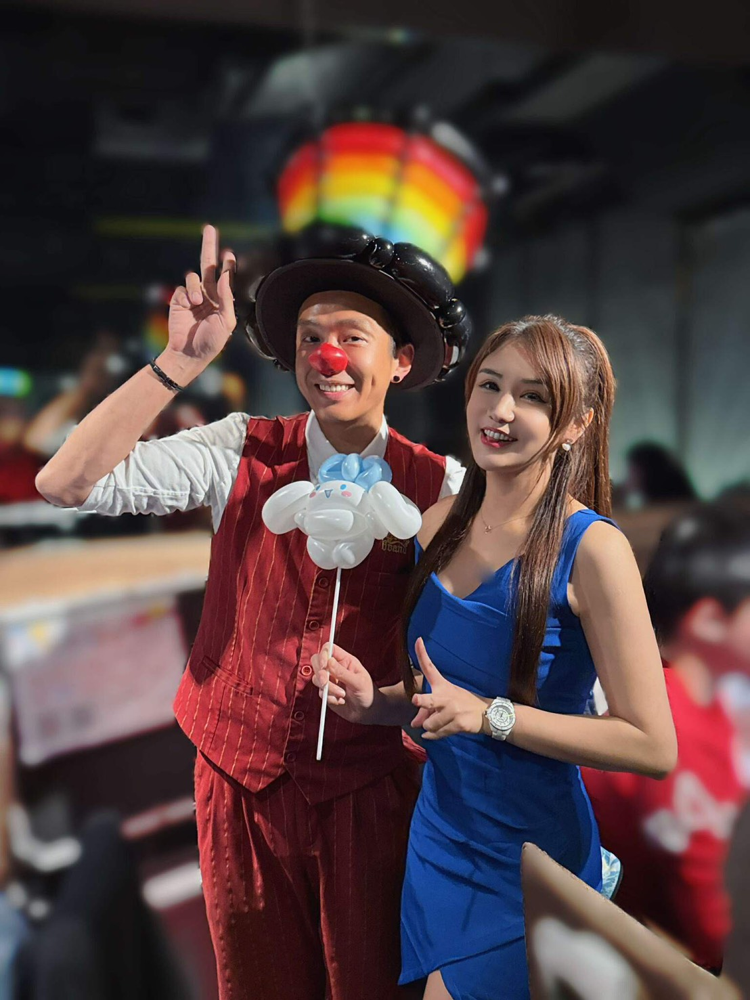
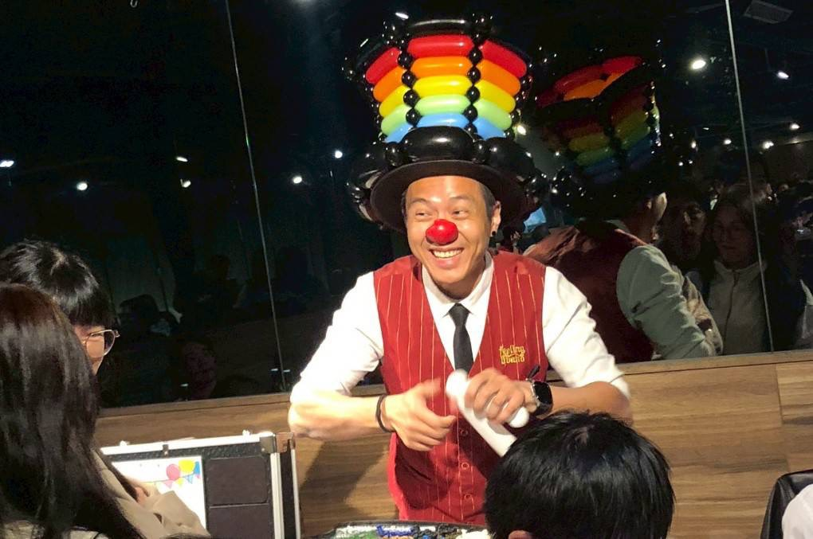

台北尾牙氣球表演｜益網科技尾牙宴，新東南海鮮餐廳超人氣互動
科技大廠尾牙首選！造型氣球與歡笑聲點亮年終派對
📍 地點：新東南海鮮餐廳 松山店
隨著年終將至，尾牙的慶祝氛圍也越來越濃厚。這次非常榮幸受到 皇朝國際旅行社股份有限公司 的專業邀約，來到台北知名的 新東南海鮮餐廳（松山店），為 益網科技股份有限公司 的尾牙宴會擔任造型氣球表演嘉賓。新東南的空間寬敞且充滿傳統海鮮名店的氣派感，與科技公司充滿活力的員工背景相結合，現場氣氛非常熱烈！本場演出屬於氣球大叔 Sony 在 台北企業尾牙活動 中的實際案例之一。

氣球大叔 Sony 與主持人倪倪聯手帶動現場氣氛，大耳狗氣球成為全場焦點。
專業搭檔與驚喜細節：大耳狗與燦爛笑容
在這次的活動中，我與專業主持人 倪倪 共同合作。倪倪優秀的控場能力讓活動流程順暢無比，而我則負責用氣球「魔法」滿足大家。當我把剛完成的可愛「大耳狗（Cinnamoroll）」氣球遞給倪倪時，現場的女性同仁與孩子們都忍不住驚呼：「太可愛了！」
造型氣球不只是表演，更是一種連結人的媒介。在海鮮餐廳熱鬧的圓桌間穿梭，我堅持帶著最燦爛的笑容，為每一位賓客親手製作專屬作品。無論是可愛的卡通明星，還是充滿祝福的節慶飾品，每一根氣球在扭轉之間都承載著益網科技對員工們一整年辛勞的感謝。

氣球大叔的燦爛笑容，是讓活動加溫的關鍵密碼。
尾牙活動的靈魂：互動與聚客
尾牙除了美食，最重要的就是讓同仁們感受到放鬆與快樂。科技公司的工程師們平時工作嚴謹，但在看到氣球作品誕生的瞬間，每個人都露出了孩子般的純真笑容。造型氣球的流動性服務，成功填補了宴席間的空檔，讓整場尾牙從頭到尾都沒有冷場。
"這次真的很謝謝 Sony 大叔！旅行社推薦過來的時候我們就很期待，現場看 Sony 動作俐落且笑容滿面，大耳狗真的折得太精緻了，連主持人都說要私藏！讓我們的尾牙更有層次感了。"
🎈 正在尋找台北氣球表演嗎？
如果您也希望為您的活動創造像現場一樣爆棚的人氣與笑聲，氣球大叔 Sony 是您的首選！我們專注於提供高品質的互動演出。
氣球大叔 Sony 長期深耕北部，提供 台北尾牙氣球表演、台北企業活動互動氣球、台北親子活動表演 等服務，熟悉各大飯店、餐廳與百貨場地的動線與節奏。
- 百貨商場活動：中庭舞台秀、假日聚客、週年慶造勢。
- 品牌行銷推廣：新品發表會、門市開幕、VIP 客戶派對。
- 親子家庭日：企業家庭日、社區晚會、私人慶生派對。